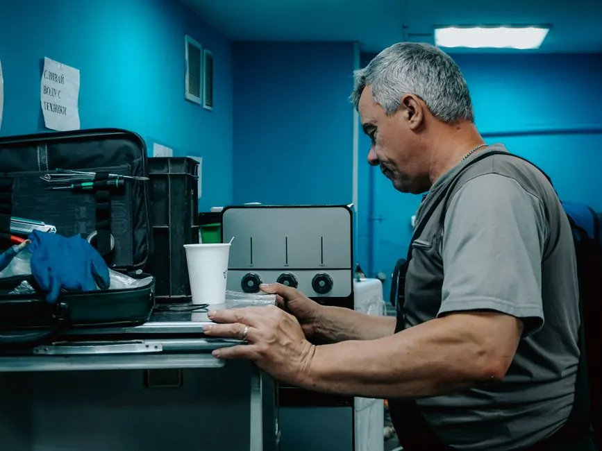

Drain Cleaning in Pelican Bay, Naples
Serving high-rise towers, garden condominiums, and single-family residences along Pelican Bay Boulevard and Gulf Shore Drive. We specialize in vertical stack diagnostics, quiet branch line cabling, and camera inspection adhering to strict community guidelines.

Drainage Considerations in Pelican Bay Properties
Pelican Bay features a diverse mix of high-rise coastal towers, low-rise garden condominiums, and gated single-family enclaves. Each environment has specific plumbing demands:
Vertical Common Stacks
In high-rise and mid-rise buildings, kitchen and laundry drains tie into vertical multi-story stacks. When grease or detergent foam restricts the common vertical riser, wastewater can bubble up into lower units. We scope branch lines to distinguish unit issues from building stack clogs.
HOA & Management Access Coordination
Many Pelican Bay associations have specific security gate registration, designated work hours, and service elevator rules. Where work involves shared plumbing risers, we work respectfully with your building manager to verify access arrangements.
AC Condensate & Secondary Lines
In Southwest Florida's humid climate, air conditioning condensate lines frequently tie into bathroom drain traps. Algae and sludge can cause drain backups that trigger safety float shut-offs. We clear these critical lines quickly.
Discreet Drain Solutions for Pelican Bay
Our technicians carry clean, battery-powered and electric cabling units suited for quiet operation in residential buildings.
1. Quiet Motorized Cabling: For indoor suites, guest bathrooms, and kitchen sinks, our mechanical cabling service extracts hair and food waste without disruptive vibration or noise.
2. Mainline Sewer Cleaning: For single-family residences along Pelican Bay Boulevard, our sewer cleaning service cuts roots and clears exterior cleanouts.
3. High-Pressure Hydro Jetting: For commercial clubhouse lines, restaurant kitchens, and severe grease build-up, our hydro jetting service flushes lines completely clean.

Ideal for Condominiums
Specialized Plumbing Care for Pelican Bay High-Rises & Gated Enclaves
Pelican Bay encompasses prestigious high-rise condominium towers along Pelican Bay Boulevard, mid-rise complexes, and secluded single-family neighborhoods like Bay Colony. High-density residential architecture demands strict adherence to HOA regulations and specialized acoustic plumbing clearing.
Vertical Stack Snaking Protocols
In multi-story condominium towers, multiple units share common vertical sanitary drainage stacks. A clog on the 4th floor can cause backup into 2nd and 3rd floor kitchen sinks. Our technicians navigate vertical drops with controlled-speed drum machines, preventing cable punch-through and eliminating water blowouts into adjacent units.
HOA Adherence & White-Glove Care
Pelican Bay associations maintain strict building access hours, freight elevator booking rules, and property protection standards. We supply Certificate of Insurance (COI) documentation directly to building management, lay down continuous carpet protection, and operate ultra-quiet machinery compliant with residential noise limits.
Seasonal Dormancy & P-Trap Protection
With many Pelican Bay residents residing up north during the summer months, unoccupied units frequently experience dried P-traps. The evaporated water seal allows sewer methane gas to enter penthouse living areas. We provide complete pre-departure trap sealing and seasonal arrival flow diagnostics.
Pelican Bay Plumbing Frequently Asked Questions
Do you coordinate directly with Pelican Bay condo managers and security gates?
Yes. Our dispatch team is thoroughly accustomed to Pelican Bay gate security protocols, contractor parking guidelines, and service elevator reservations. We provide advance notification, carry full credentials, and maintain seamless coordination with building engineers.
Can hydro jetting be performed safely in high-rise condominium buildings?
Yes, utilizing specialized compact electric jetting units designed specifically for high-rise interiors. We regulate operating pressure to safely clean common horizontal parking garage lines and vertical kitchen stacks without risk of joint blowout.
Pelican Bay Association Standards & Quiet Clearing Technology
High-rise living in Pelican Bay towers requires strict compliance with condominium rules. We minimize disruption while resolving common stack clogs and individual unit kitchen lines.
Ultra-Quiet Electric Drum Units
Condo sound transmission rules are strictly respected. We use variable-speed electric drum machines engineered for low decibel operation, ensuring neighboring penthouses and units experience zero acoustic disturbance.
Common Kitchen Stack Coordination
In high-rises, kitchen waste lines merge into vertical common stacks. When grease restricts the stack, we coordinate with building engineering to access garage lower-level cleanouts, clearing the shared stack without disturbing upper floor occupants.
Pre-Arrival COI & Association Paperwork
Before dispatch, our administrative office faxes or emails complete Certificate of Insurance documentation directly to your property manager or front gate security, ensuring immediate gate clearance and service elevator access.
Pelican Bay Association Standards & Quiet Clearing Technology
High-rise living in Pelican Bay towers requires strict compliance with condominium rules. We minimize disruption while resolving common stack clogs and individual unit kitchen lines.
Ultra-Quiet Electric Drum Units
Condo sound transmission rules are strictly respected. We use variable-speed electric drum machines engineered for low decibel operation, ensuring neighboring penthouses and units experience zero acoustic disturbance.
Common Kitchen Stack Coordination
In high-rises, kitchen waste lines merge into vertical common stacks. When grease restricts the stack, we coordinate with building engineering to access garage lower-level cleanouts, clearing the shared stack without disturbing upper floor occupants.
Pre-Arrival COI & Association Paperwork
Before dispatch, our administrative office faxes or emails complete Certificate of Insurance documentation directly to your property manager or front gate security, ensuring immediate gate clearance and service elevator access.
Pelican Bay Drain Cleaning FAQs
Do you handle drain clogs in Pelican Bay high-rise condominiums?
Yes, our technicians understand the plumbing architecture of multi-story buildings, including vertical common stacks, kitchen branch tie-ins, and secondary air conditioning condensation lines.
How are HOA property access rules handled for Pelican Bay communities?
We strictly respect condominium association guidelines, gate security registration, designated contractor service hours, service elevator bookings, and building management check-ins.
What causes recurring kitchen sink backups in condominium units?
In vertical buildings, multiple units share a common vertical drain stack. If unit owners above or below discharge cooking grease, detergent foam, or food waste, the common line narrows, causing suds or wastewater to back up into lower-floor units.
Do you provide video camera scoping inside condominium branch lines?
Yes, we use compact, high-flexibility video cameras capable of navigating 1.5-inch and 2-inch residential branch pipes to determine whether a clog is inside your private unit or in the common building stack.
How do I schedule service if I am an out-of-state seasonal owner?
We frequently assist absentee owners by coordinating directly with building property managers, home watch services, or real estate caretakers. We provide video recordings and electronic quote authorization.
High-Rise Vertical Stack Descaling & Kitchen Line Degreasing
In multi-story condominium buildings along Pelican Bay Boulevard, shared vertical kitchen stacks accumulate emulsified grease from dozens of units. Over years, this grease hardens into a narrow 2-inch passage. Our specialized rotary descaling cables scour the full 4-inch stack circumference from lower garage cleanout access points, restoring original discharge velocity for all residential tiers above.
Balcony & Lanai Trench Drain Maintenance in Pelican Bay
Pelican Bay mid-rise and high-rise condominiums feature expansive private lanais overlooking the Gulf and mangrove conservation areas. During sudden summer downpours, windblown debris quickly clogs exterior balcony scuppers and perimeter trench drains. If water pools above threshold tracks, expensive interior flooring damage can occur. We clear lanai drain lines with specialized suction and low-pressure flush tools designed to preserve waterproofing membranes.
Bay Colony Private Security Clearance & Rapid Entry
In Bay Colony and Pelican Bay high-security gated enclaves, contractor entry requires pre-authorized dispatch credentials. Our office maintains active commercial vendor registrations with Pelican Bay Foundation security. Our dispatch vans receive expedited gate clearance, allowing us to arrive at your luxury tower or estate in minutes during an urgent drainage emergency.
How do you handle sewer line backups in Pelican Bay single-family homes?
In single-family Pelican Bay enclaves such as The Woods and Bay Colony, residences feature private underground sewer laterals connecting to Collier County collection mains. Mature landscaping often introduces ficus root networks into lateral joints. We deploy trailer-mounted hydro jetting and rotary Warthog root-cutting heads from outdoor cleanouts, removing roots completely without entering your living areas.